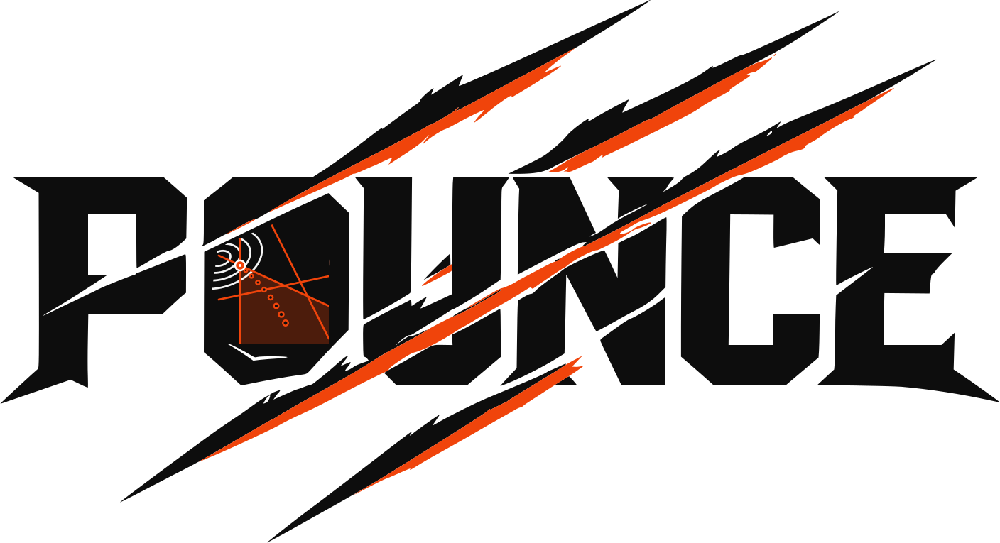

in the browser
Write Python, solve it with POUNCE — both running in this tab.
Pyodide supplies CPython compiled to WebAssembly,
and there are two ways to reach the solver from it. import pounce gets
the pounce-solver
package itself, built for emscripten: minimize, curve_fit,
the Problem class and numpy arrays, the same API as a local install.
import pounce_browser takes the Pyomo route instead — Pyomo writes the
AMPL .nl, a standalone POUNCE wasm module solves it, and the
.sol is loaded back so x.value and
model.dual[c] read as they would after any local solve. Whichever a
script imports is what gets downloaded, on the first run that needs it. No server,
no install, nothing uploaded.
Script
Edit freely — the worker installs what your script imports, so
import pounce and import pounce_browser both work from a
blank editor. On the Pyomo route,
pounce_browser.solve(model, options=…) takes
ipopt.opt-format options — the same names the POUNCE CLI and Python
API use. import matplotlib works as well —
plt.show() renders the figure below the output. Ctrl/⌘-Enter runs.